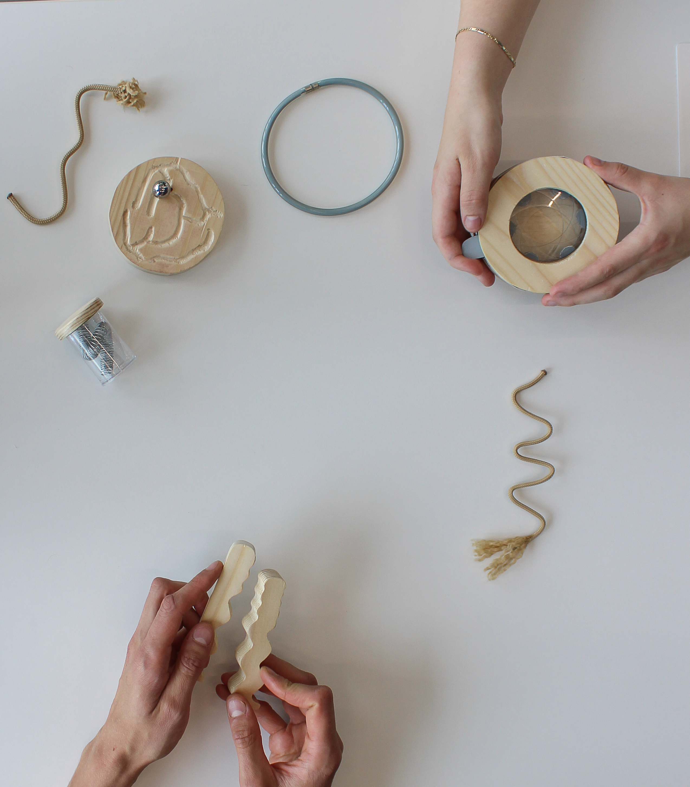
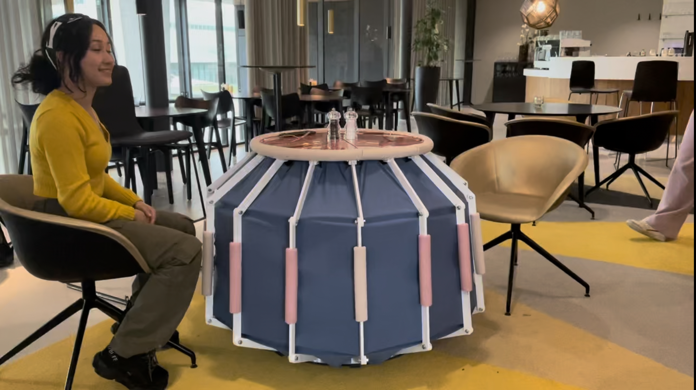
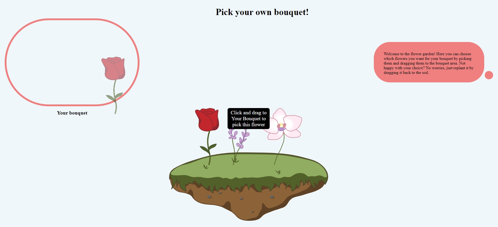
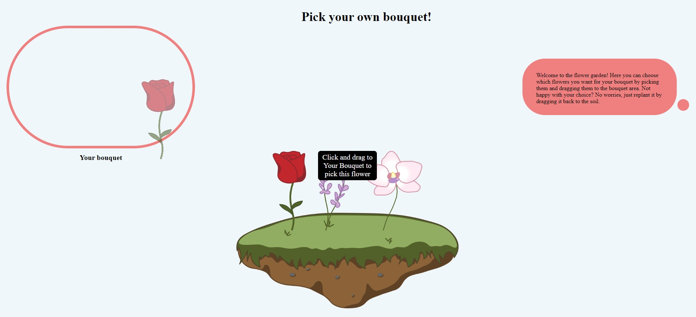

Business & Entrepreneurship
Being honest, it took a while for me to see the relevance of this expertise area in my personal development. As a sceptic of the free market economy, I felt resistant to designing from a business perspective. I am convinced the throwaway society is created by the profit-driven approach of many companies, such as Amazon and most fashion brands, but also companies that claim to care about the environment. I believed that designing from the perspective of a profitable business plan would always contribute to a society in which consumerism stays central, promoting unsustainable practices, inequality, and exploitation of both human and material resources. Still needing to expand my knowledge in this area for the sake of graduating, I followed a course on Buyer Behaviour during my exchange at RMIT University. This initially confirmed my worries about applying a consumer-focused approach. We were taught about the decision-making processes of consumers, followed by strategies to influence buyer behaviour, steering them towards making specific decisions. It became clear to me that this comes with a responsibility that I do not believe many designers and companies take seriously. I learned how the early stages of the decision-making process are at the foundation of the way a product is going to be treated and discarded in the future. I realized that understanding these processes gives a designer the power, and responsibility, to change them. This view was inspired by a description of artifact relationships by Alison Page: A “[…] dimension to the sustainability of Indigenous designs is the inherent preciousness of the object or design because of its increased meaning. Imbuing the object with spirit through its story increases its value to the owner, who will preserve it for longer. It goes against the consumerist ‘throwaway’ society. The object has life, and that life is valued” (Page, 2021). I have learned that designing from a business perspective does not mean the focus is solely on making monetary profit. The point of it is to know how to create value for people, which can result in profit, but also in value-based behavioural change. I believe that to be at the base of a transformation towards a more sustainable society. Through methods such as the ones offered in the course Design Innovation Methods, I have learnt how to analyse and evaluate value propositions and use this to go beyond making monetary profit and be aware of the roles of stakeholders and societal impact. Last but not least, I have had some experience of putting my knowledge into practice through several activities. I have been in Lucid’s ID Connect committee, with whom we organised a networking event for ID students and design companies. This gave me hands-on experience in having to create value for several stakeholders. I have also been the chairman of the Introduction Committee at Lucid and I volunteer at a sailing school as an instructor and coach. When I am coaching, I lead groups of about twenty instructors during a week in such a way that children who come to learn how to sail can do so in a safe, fun and educative setting. This requires having a clear vision of what I want to be moving towards at all times and being able to take a helicopter view of a process. Having developed this skill has helped me a lot during my FBP with keeping a clear vision of what I want to design for and being able to zoom out on my own design process.
User & Society
Throughout my bachelor’s, I have progressed from knowing the relevance of involving people in the design process to truly understanding it. A user-centred focus has always come naturally to me, as I find the mind and its cognitive processes fascinating to study. Hence, I followed the courses ‘Introduction to Psychology and Technology,’ ‘Human Factors,’ and ‘Buyer Behaviour’ to understand the mind and apply this knowledge in such a way that designs and interactions would be smooth, intuitive, and satisfying for users. I know how cognitive processes drive decisions and behaviour and how the functioning of the human mind should be considered when designing. Initially, I thought having this knowledge would be sufficient for creating ‘good designs.’ However, I felt that I could never know enough to fully predict how certain interactions would unfold. This created some friction, as I saw many examples of design approaches that rely on having this knowledge. However, I couldn’t seem to reach a high enough level of psychological understanding to avoid the need to interact with humans to achieve a desired interaction immediately. Courses such as ‘Indigenous People and the Environment’ and ‘Intercultural Communication,’ which I took during my exchange, helped me realise that even someone who is an expert in my eyes will never fully understand all the possible people for whom we can design. There is strength in accepting this, as it fosters a more humble approach where the designer does not presume to know people’s needs purely based on distant analysis. The best way to acquire those insights is to step into society, talk to many different people, and involve them in the design process at all times. Throughout my bachelor’s, my perspective on user-centred design shifted from seeing it as designing for people to designing with people. This shift became evident during my FBP, during which I made sure to involve people not just in the evaluation phase, but also during the exploration, reflection, creation, and envisioning phases. My previous knowledge about cognition still helped me understand theories about embodied cognition more easily. Moreover, I have developed the ability to zoom out and consider users' positions within their communities and society at large, even relating to post-human settings. This skill enables me to focus not only on individual users but also on understanding the broader social and environmental contexts in which they exist. By adopting a holistic view, I can design solutions that are more inclusive and sustainable, addressing the needs of diverse groups and future scenarios. This broader perspective has been crucial in ensuring that my FBP contributes positively to society and the environment.
Math, Data & Computing
I often feel that I am not proficient enough in the areas of mathematics, data, and computing, which makes me hesitant to incorporate these elements into my design process. However, I have established a solid foundation through courses such as Creative Programming, Data Analytics, and Making Sense of Sensors. These courses have equipped me with the skills to use programming to analyse large data sets and identify patterns. Over time, I have expanded my approach from numerical data analysis to include more qualitative research methods. During my B2.2 research project on the personalisation of food, I used tools such as the Geneva Emotion Wheel, heatmaps, and repertory grids. These methods felt more aligned with my skills and closer to a human-centred approach which I consider very important in a design process. However, it is mainly the abstract way of learning to understand connections that I have incorporated during my FBP. I have mainly focused on the applications of data analysis in Large Language Models rather than actually performing it. I used abstract thinking to make sense of my project and about the Repository of Transformation and its broader positioning within transformation and for envisioning future possibilities of creating a large knowledge network. Nevertheless, my reluctance to delve deeply into data analysis still leads me to leave the development of technology in my designs to others or to the future. In conclusion, while I have a foundation in mathematics, data, and computing, have expanded my skills to include qualitative research methods, and am able to think about complex matter in an abstract way, I have recognised the importance of not backing away from implementing data and computing into my design process. Embracing these elements earlier in my FBP could have enhanced my ability to create a more comprehensive and impactful design.
Creativity & Aesthetics
Already before starting my bachelor’s, I had an intuition for aesthetics and setting up creative processes. Nevertheless, I feel like I have learned many ways to validate and further develop this intuition since I started at ID. By relating design choices to underlying theories about aesthetics and interaction, based on knowledge of the human brain, and validating them in real life through observation and exploration, I have created an ongoing feedback loop between intuitive and informed design. I implemented this during my FBP by creating six prototypes, which formed a coherent family of objects that each had specific aesthetic interactions that provoked conversations. Throughout my bachelor’s, I have learned to use many different tools and techniques for brainstorming and ideating, such as exploratory sketching and making, interaction relabelling, affinity diagramming, and storyboarding. These tools are incredibly helpful for getting through the beginning stage of a design process and are also a great way to communicate ideas to others. When I first started learning about the variety of tools available, I thought it would be important to learn about as many of them as possible, believing there would be an optimal tool for every specific situation. This led to spending hours trying to find the ‘right’ methodologies for each situation. However, I learned from experience that this absolute way of looking at such tools made me overlook their true purpose. I became aware that tools work as a means to adopt a different attitude towards a problem. During my FBP, I worked in the minor key, which I had not done before. It allowed me to adopt a much more open-minded and explorative mindset, which was very much needed in a project that required embracing complexity. This attitude can also be applied while designing with people, as co-creation sessions do not need to consist of just speaking. Through several sessions with squad members, I explored various creativity techniques to make good use of the time and go beyond hearing expected answers. Fostering a creative atmosphere by using embodiment has proven to be a highly effective way of working for me, and I will continue to use such sessions in future design projects.
Technology & Realisation
I have developed my skills in T&R through various projects and courses. I have always considered possessing prototyping skills essential as a designer because it allows me to ideate through making (rapid prototyping), which speeds up and enriches the process. It enables me to communicate concepts and, through observing interactions, find out what works and doesn’t in a design. Prototypes bridge the gap between my brain and the outer world. I have created large prototypes for Aesthetics of Interaction, which taught me a lot about making assembly plans and integrating functional mechanics into a design. I have also made smaller prototypes that required soldering and learned how to work with new materials such as wood and clay. These experiences have provided me with useful hard skills for creating physical prototypes. Using software in combination with these prototyping skills has allowed me to elevate some of my prototypes. I have learned how to create 3D models in Fusion 360 for several 3D prints, which I also used during my FBP. Additionally, I have created interactive mock-up apps in PowerPoint, JustInMind, and Figma. These skills have been invaluable in manufacturing final prototypes and precisely communicating designs. I have also established a basic understanding of sensors, actuators, and general electronics and programming to complement the use of electronics. I applied this knowledge to create interactive web pages, such as my portfolio, and an interactive page for a florist during the course Interactive Media, where customers could pick and choose flowers to create a personalized bouquet. The skills I acquired through all the activities mentioned above allowed me to iterate quickly during my FBP and were crucial when I created my final prototypes. Most of them were made out of wood, which I had not worked with extensively before. However, having experience with learning how to work with new materials was certainly valuable. I chose not to implement any electronics or create a functional webpage for the Repository of Transformation. My consideration was to communicate the look, and therefore, functionality was not necessary. It would have been challenging to develop and did not fit the project's current scope. The aperture and container prototype required the most planning and careful construction. The aperture had to be able to open and close by twisting the top while still matching the aesthetic of the other wooden prototypes and maintaining a lightweight design. By making several iterations, using different materials, and careful planning, I managed to create a functional prototype with a wooden exterior. However, it was a demonstrational prototype, as it was not robust enough to be used by people during conversations.
 

Future
Because I want to develop myself further as a designer, I am going to continue with the Master Industrial Design at the TU/e. I am probably going to combine this with the double degree Science Education that the TU/e offers, as I feel inspired to contribute to society, science and eduction in a small manner. Moreover, the idea of passing on knowledge speaks to me very much.